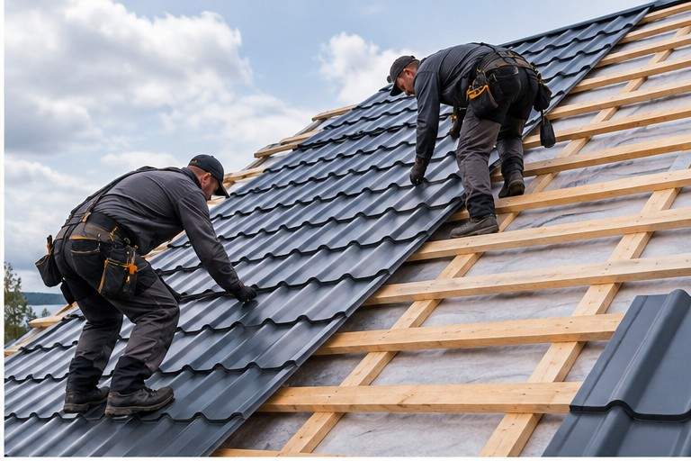

Протечки
Ищу место, где вода проходит в покрытие или узел, и закрываю именно его.
Ремонтирую кровлю частных домов: протечки, повреждённые участки и отдельные узлы. Работаю лично в Архангельске, Северодвинске и Новодвинске.
Стоимость зависит от состояния крыши и объёма работ
Позвонить: +7 921 484-08-74
Беру локальные работы по кровле частного дома. Если по фото видно, что нужен другой объём, скажу об этом до начала.
Ищу место, где вода проходит в покрытие или узел, и закрываю именно его.
Меняю помятые и пробитые листы металлочерепицы и профнастила.
Подтягиваю или меняю конёк, планки и примыкания, если вода идёт через узел.
Меняю сгнившие или просевшие участки. Отдельная услуга — обрешётка.
Восстанавливаю порванную плёнку на повреждённом участке. Подробнее — ветровлагозащита.
Усиливаю или меняю отдельные повреждённые детали. Каркас целиком — на странице стропил.
Ремонтирую подшивку и карниз, если от них отходит вода или срывает ветром. Услуга — свесы.
Ставлю на место желоба и трубы, если вода идёт мимо. Отдельная страница — водосток.
По переписке это не диагноз. Сначала смотрю фото, при необходимости выезжаю и только потом говорю, какой объём нужен.
Повреждение локальное: один участок, узел или несколько листов, а остальное покрытие и основание выглядят рабочими. Тогда нет смысла снимать всю кровлю.
Повреждений много или основание сильно изношено. Точечный ремонт в таком случае не закрывает проблему. Как устроена полная работа — на странице замены кровли.
Коротко по материалам, с которыми работаю. Подробности монтажа — на страницах покрытий.
Локальная замена листов, конька и примыканий, если остальное покрытие ещё держит воду.
Меняю пробитые и сорванные листы и закрываю узлы, через которые идёт вода.
Ремонтирую вздутия, трещины и отслоения гибкой черепицы на повреждённом участке.
Поджимаю фальцы и меняю повреждённые картины, если остальная кровля в рабочем состоянии.
Одной цены за квадратный метр ремонта нет: объём каждый раз разный. Стоимость согласую до начала работ.
Один узел и несколько скатов — разный объём.
Металл, гибкая и фальцевая кровля ремонтируются по-разному.
Иногда достаточно снять несколько листов, иногда — участок целиком.
Если дерево сгнило, меняю его вместе с покрытием.
Порванная плёнка тоже входит в объём, если её нужно восстановить.
Узлы у трубы, стены и конька занимают больше времени, чем ровный скат.
Свесы, водосток и отдельные элементы стропил считаю отдельно, если они нужны.
Если в ремонт входит замена участка покрытия, обрешётки или водостока, эти работы есть в прайсе отдельно: металлочерепица и профнастил — 800 ₽/м², обрешётка — от 250 ₽/м², ветровлагозащита — от 180 ₽/м², желоба — 770 ₽/м.п. Это не цена ремонта целиком.
По снимкам предварительно оцениваю объём. Если по фото неясно, осматриваю крышу на объекте и после этого согласую стоимость.
Заявку принимаю сам и сам выхожу на объект. Заявка не уходит в офис или бригаду.
Сначала согласуем объём и цену. Потом начинаю ремонт.
Основные работы опубликованы на странице цен. Смету ремонта собираю из того, что реально нужно.
На выполненные мной кровельные работы.
Реальные кровельные работы, выполненные мной.
Позвоните или напишите в MAX и приложите фото повреждения.
По фото оцениваю объём. Если снимка недостаточно, осматриваю крышу на объекте.
До начала работ согласуем состав ремонта и стоимость.
Делаю работу и сдаю результат. На выполненные работы — гарантия 1 год.
Одной цены за квадратный метр нет. Стоимость зависит от площади повреждения, покрытия и того, нужно ли менять обрешётку, плёнку и узлы. По фото могу предварительно оценить объём, точную сумму согласую до начала работ.
Да, если повреждение локальное, а остальное покрытие и основание в рабочем состоянии. Это видно по фото, а при необходимости — на осмотре.
Не всегда. При локальном повреждении достаточно ремонта участка. Если покрытие или основание сильно изношены, чаще нужна замена кровли.
Да. Также ремонтирую гибкую и фальцевую кровлю. Страницы покрытий: металлочерепица, профнастил, мягкая кровля, фальцевая кровля.
Да. Пришлите фото в MAX. Это предварительная оценка объёма, не итоговая смета. Точную стоимость согласую после оценки, а если по снимку неясно — после осмотра.
В Архангельске, Северодвинске и Новодвинске.
Пришлите фото повреждения. Оценю объём и скажу, достаточно ли ремонта или лучше смотреть замену.